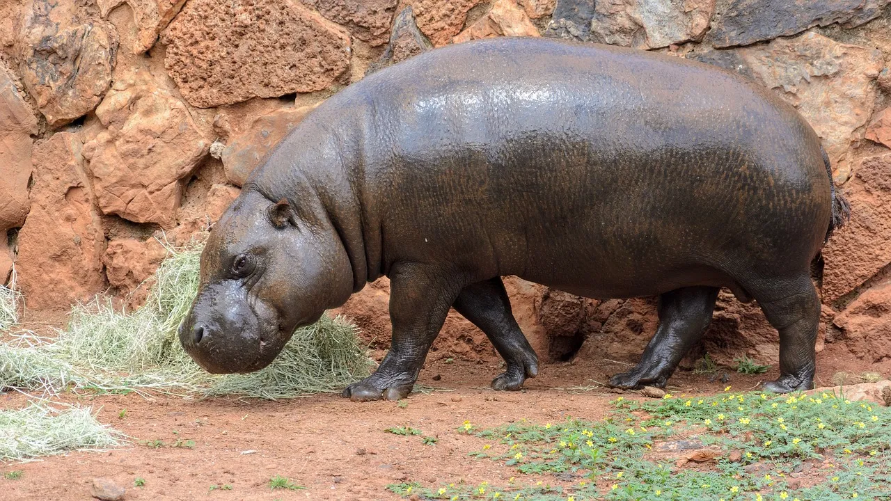
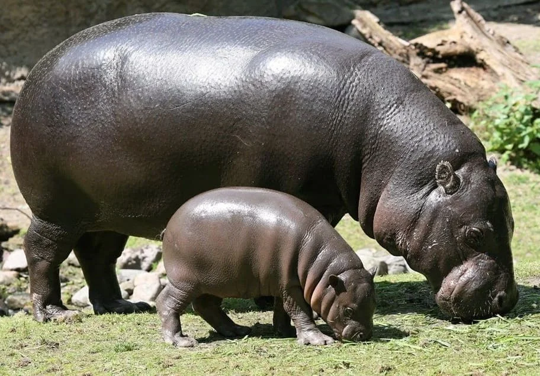

Hipopotamo Pigmeu
Choeropsis liberiensis
O hipopótamo-pigmeu (Choeropsis liberiensis) é um dos mamíferos mais fascinantes e misteriosos das florestas tropicais da África Ocidental. Sendo uma espécie muito mais solitária e discreta do que o seu famoso parente de tamanho regular, destaca-se pelo corpo compacto, pernas curtas e robustas e por uma cabeça arredondada de aspeto pacífico. A sua pele espessa e escura secreta uma substância oleosa de tom rosado — frequentemente apelidada de "suor de sangue" — que funciona como um protetor solar natural e um hidratante para mantê-la protegida da secura e de infeções na vegetação densa.
Habitat Natural
O hipopótamo-pigmeu habita preferencialmente zonas florestais densas e húmidas, pântanos arborizados e margens de rios de águas calmas nas profundezas das florestas tropicais da África Ocidental, com particular destaque para a Libéria, Serra Leoa, Guiné e Costa do Marfim. Ao contrário dos grandes hipopótamos, passam menos tempo imersos na água, preferindo mover-se por trilhos estreitos criados por eles próprios na vegetação rasteira e abrigando-se durante o dia em riachos sombrios ou cavidades nas margens lamacentas.
Dieta
O hipopótamo-pigmeu é um herbívoro de hábitos predominantemente noturnos ou crepusculares. A sua alimentação diária é composta essencialmente por rebentos tenros, folhas de arbustos, fetos, relva rasteira e frutos caídos no solo da floresta. Enquanto forrageia ao longo dos seus trilhos habituais, utiliza os lábios carnudos e flexíveis para selecionar seletivamente a vegetação mais nutritiva. Ao contrário dos grandes hipopótamos, raramente se alimentam de grandes quantidades de capim aquático nas margens abertas.
Curiosidades
- O hipopótamo-pigmeu é uma espécie criticamente ameaçada de extinção na natureza, sofrendo com a perda rápida de habitat devido à desflorestação e à caça furtiva.
- Embora possuam um aspeto corpulento, conseguem mover-se com surpreendente rapidez e silêncio através da vegetação densa e cerrada da floresta tropical.
Os nossos hipopótamos Pigmeus
No Zoo Jonçela, um simpático par de hipopótamos-pigmeus — o calmo macho Bino e a atenta fêmea Amélia — atrai a curiosidade de todos os visitantes no seu habitat especializado. Com 7 anos de idade, o Bino possui uma compleição robusta e atinge cerca de 1,5 metros de comprimento, pesando perto de 240 kg. A Amélia, com 5 anos, apresenta uma silhueta ligeiramente mais esguia, medindo 1,4 metros e pesando cerca de 200 kg. Ambos partilham um recinto arborizado que combina zonas terrestres lamacentas com um lago de pouca profundidade, onde demonstram o seu comportamento tranquilo e solitário.